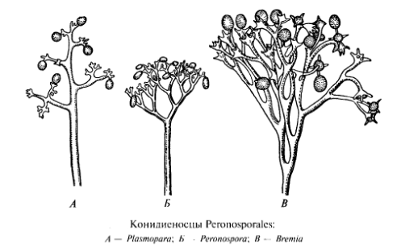

Род Plasmopara
Систематика
Характеристика
Спорангиеносцы имеют моноподиальное ветвление, боковые ветки отходят от ствола практически под прямым углом и заканчиваются зубцами, на концах которых сидят спорангии.Спорангии могут прорастать либо зооспорами, либо мицелием. Образование оогониев и антеридиев наблюдается редко, при оплодотворении формируется одна ооспора - с толстой гладкой или складчатой коричневой оболочкой.

Классификация
Г. А. Белякова, Ю. Т. Дьяков, К. Л. Тарасов. Ботаника в чертырёх томах. Том 2:
водоросли и грибы